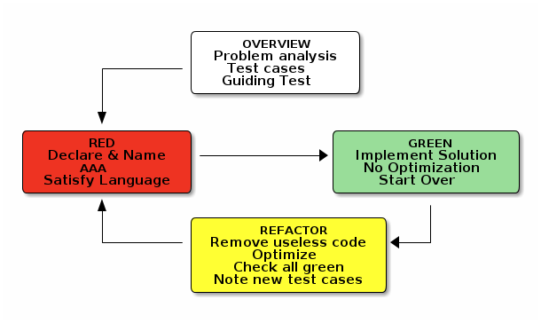

Hi and welcome to team Gilded Rose.
As you know, we are a small inn with a prime location in a prominent city ran by a friendly innkeeper named Allison. We also buy and sell only the finest goods. Unfortunately, our goods are constantly degrading in quality as they approach their sell by date. We have a system in place that updates our inventory for us. It was developed by a no-nonsense type named Leeroy, who has moved on to new adventures.
First an introduction to our system:
sell_in value which denotes the number of days we have to sell the itemPretty simple, right? Well, this is where it gets interesting:
sell_in value approaches; quality increases by 2 when there are 10 days or less and by 3 when there are 5 days or less but quality drops to 0 after the concert
Feel free to make any changes to the update_quality method and add any new code as long as everything still works correctly.
However, do not alter the Item class or items property as those belong to the goblin in the corner who will insta-rage and one-shot you as he doesn’t believe in shared code ownership (you can make the update_quality method and items property static if you like, we’ll cover for you).
For this quest, you have been provided with some items that will help you…
You've been provided with a fixture generator, which generates example runs with many cases.
You can use it like this, argument is the number of days to count for update:
$ python generate_fixture.py 1 -------- day 0 -------- name, sellIn, quality +5 Dexterity Vest, 10, 20 Aged Brie, 2, 0 Elixir of the Mongoose, 5, 7 Sulfuras, Hand of Ragnaros, 0, 80 Sulfuras, Hand of Ragnaros, -1, 80 Backstage passes to a TAFKAL80ETC concert, 15, 20 Backstage passes to a TAFKAL80ETC concert, 10, 49 Backstage passes to a TAFKAL80ETC concert, 5, 49 Conjured Mana Cake, 3, 6
-------- day 1 -------- name, sellIn, quality +5 Dexterity Vest, 9, 19 Aged Brie, 1, 1 Elixir of the Mongoose, 4, 6 Sulfuras, Hand of Ragnaros, 0, 80 Sulfuras, Hand of Ragnaros, -1, 80 Backstage passes to a TAFKAL80ETC concert, 14, 21 Backstage passes to a TAFKAL80ETC concert, 9, 50 Backstage passes to a TAFKAL80ETC concert, 4, 50 Conjured Mana Cake, 2, 5
You are strongly recommended to run this command with an appropriate number of days as argument, redirecting the output to a golden_master.txt file.
That way, while refactoring, you'll be able to check the output of the following command to ensure everything is ok:
$ bash run_tests ============================= test session starts ============================== platform linux -- Python 3.5.4, pytest-3.2.3, py-1.4.34, pluggy-0.4.0 rootdir: /home/ifosch/src/github.com/BCNDojos/pyDojos/gilded-rose, inifile: collected 1 item test_gilded_rose.py . ======================== 1 passed in 0.00 seconds ==============================
Before going on, you should also fill up the test_gilded_rose.py with tests for the all use cases…
Be careful, there'll be dragons!
Once you get your tests completed and your golden_master ready, you can go ahead and start refactoring the update_quality method…
Remember running your tests often and good luck!
Your task now is to add the new feature to our system so that we can begin selling a new category of items. We have recently signed a supplier of conjured items. This requires an update to our system:
Same rules on Items class and items property apply here.